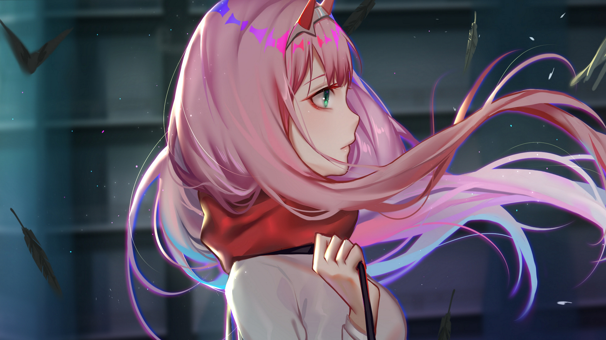
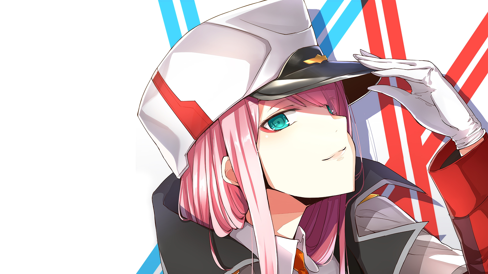
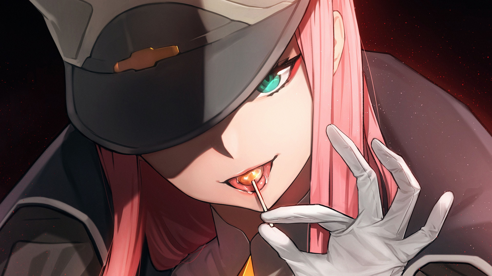

Crescendo, Zero Two desenvolveu uma pele clara. Ela tinha uma figura esbelta e atlética; ela era a garota mais alta do esquadrão e ainda mais alta que a maioria dos meninos também. Ela tinha longos cabelos rosa na altura da cintura com franja reta cobrindo a testa e um par de chifres vermelhos na cabeça e uma faixa branca sobre os chifres. Ela tinha olhos turquesa afiados com anéis ao redor das pupilas e marcas vermelho-rosadas no canthi.
Também estava implícito que ela sabia mais sobre o mundo exterior do que os outros membros do Esquadrão 13. Ela também parecia ter mais conhecimento sobre coisas diferentes do que os outros, pois sabia o que era um "beijo", o que vinha "depois de beijar" e o significado por trás de "amor". Ela também pediu aos Parasitas que falem por si mesmos e façam o que acham certo antes de se arrependerem e antes que "seja tarde demais".
Zero Two também claramente não se importou se ela está vestindo roupas ou não, julgando como ela nem sequer piscou sobre Hiro vê-la nua e, em vez disso, escolheu ele por segurar sua calcinha.
Zero Two foi criado pelo Dr. FRANXX a partir do DNA da Princesa Klaxosaur . Muitos espécimes como a própria Zero Two nasceram, mas não sobreviveram; tornando-a o único híbrido humano-klaxo sapiens bem-sucedido. Dr. FRANXX também criou clones usando células de Zero Two; os 9's , mas eles não herdaram o sangue Klaxosaur. Devido a Zero Two ser o único espécime com sangue de Klaxosaur a sobreviver, ela decidiu operar a Entidade Estelar; uma massa coletiva de Klaxosaurs que só pode ser operado por um Klaxo-sapien, em nome da humanidade. Por causa de seu alto potencial de parasita e potencial em geral, ela recebeu o número de código "002".
